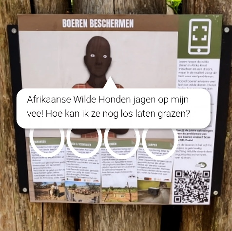
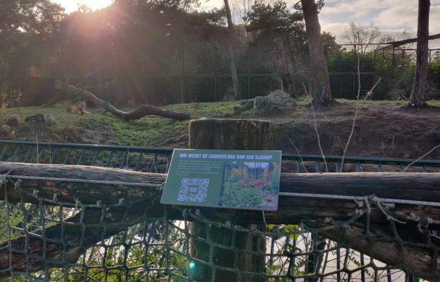
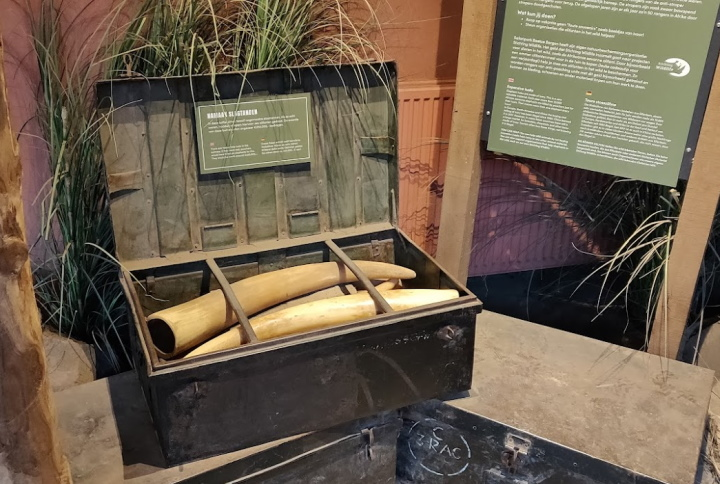

This is one of the less serious experiences, being the most game-like by far.
It came from a desire to have more varied interaction types, wanting to do something with the phone's gyro-sensor. This was a perfect fit for a game about chasing an animal, which the waterbuck was a fun fit for, and perhaps slightly more original than a predator chasing its prey.
This experience took some balancing to get right. Originally it had the player play the game twice, once with and once without the circle on the waterbuck's behind.
The idea was that you would be able to tell it's more difficult without the circle, However, the difference was negligible and only made the game unnecessarily long, therefore this part was scrapped.
This experience is about human-wildlife conflict. In the experience, you do a kind of quiz on your phone, letting you help the farmer on the sign.
 encourages people to read all the information on the sign, and did so successfully during user tests.
To get the right answer, you need to look at the details of the problem presented by the farmer. What animals are causing problems? What solutions do they already have? When are the problems occurring?
The idea for this experience came from reading about the work being done by the various organizations the zoo supports, which are also featured in the experience itself.
In this experience, players take the role of species coordinator for the white rhino. This is essentially a management puzzle, to solve it the player needs to create a bachelor group (a single-gendered group) of rhinos, as there's too many males for each to be placed within a family group.
Originally, this experiences was designed for gorillas, as with this species it is easy to tell the males from the females, and the zoo actually houses a bachelor group of gorillas in the middle of the park.
However, the zoo preferred to make the it about the white rhino, as that is one of the species the zoo is actually the species coordinator of in real life.
Luckily, white rhino management also makes use of bachelor groups, so the game did not have to be altered in that regard.
This was the first experience created, back in my M2.1 project, in which I explored the possibilities for augmented, and virtual reality at the zoo.
 It was well received by visitors, but also showed areas for improvement
People thought they were looking through the eyes of a tiger, they didn't recognize the purpose of the sign on first glance, and people not wanting to use their phone felt left out.
All these issues became the foundation of how these signs were designed during the FMP iteration. Signs were given enough info to understand the topic without the phone, and now feature an image showing what the experience looks like.
The idea for this experience came from an existing sign at Beekse Bergen, which talks about the ivory trade, mentioning ivory as "bad souvenirs".
 It made me wonder what other bad souvenirs are out there that might be worth teaching about, which lead to this concept.
At first, the idea was very simple, just have a sign with suitcases you could look inside of using your phone.
However, this didn't seem very engaging, and didn't provide much added value over something that could be done with a regular sign. Making it so that the suitcases moved, made everything just a little more engaging and fun.